Фестиваль, посвящённый сохранению и возрождению традиционных текстильных ремёсел — ручного ткачества и прядения. В основе — история Льняного Спаса и уральская народная культура.
2022
Первый фестиваль в Сысерти
1 000+
Участников в 2023 г.
3 500+
Участников в 2024 г.
4 000+
Участников в 2025 г.
1.1.Грантовая заявка
ПФКИ
Заявитель: ИП Гилёва Наталья Юрьевна, Дом ремёсел «Живинка в деле», г. Сысерть Свердловской области.
Соорганизаторы: Лаптева Анастасия Борисовна (мастер по прядению), Погадаева Олеся Сергеевна (НОЦ «Сибирский центр промышленного дизайна и прототипирования», НИ ТГУ), МБУК «Дворец культуры им. И. П. Романенко», г. Сысерть.
Поддержка: Администрация Сысертского городского округа, Муниципальный фонд поддержки предпринимательства Сысертского городского округа.
Цель фестиваля
Создание коммуникационной площадки для продвижения и популяризации традиционных текстильных ремёсел через объединение мастеров и вовлечение творческой молодёжи, специализирующейся на изучении работы с текстилем.
Задачи
Привлечь внимание молодого поколения к текстильным ремёслам.
Вовлечь специалистов традиционных ремёсел для повышения профессиональной компетентности.
Актуализировать ручное ткачество и прядение в современных условиях.
Создать условия для обмена опытом и знаниями среди творческой молодёжи и мастеров.
Организовать информационную кампанию для популяризации ручного ткачества и прядения.
1.2.Сайт проекта
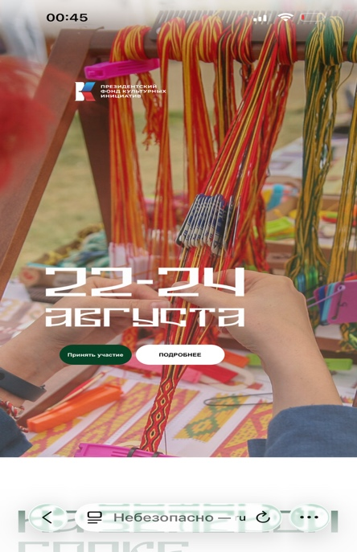
Главная страница — мобильный вид (22–24 августа)
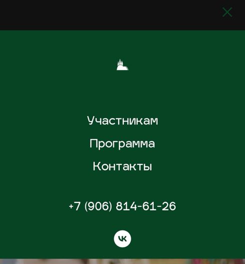
Навигация сайта
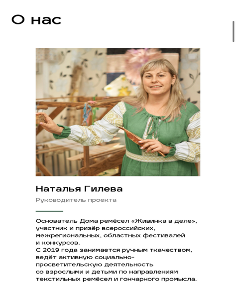
Наталья Гилева — руководитель проекта
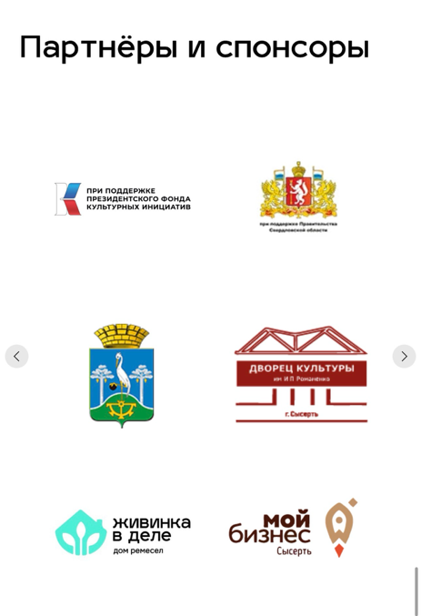
Страница «О нас»
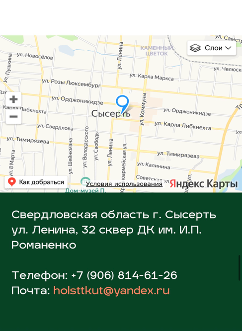
Раздел участников
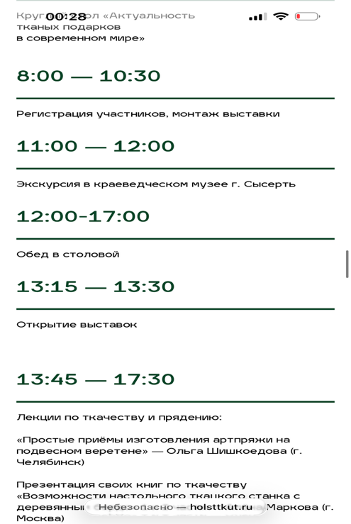
Раздел программы
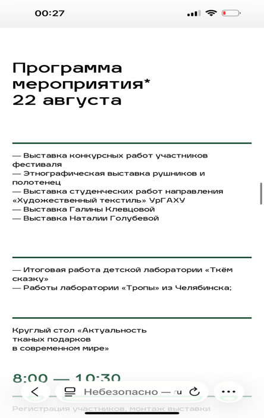
Ярмарка мастеров
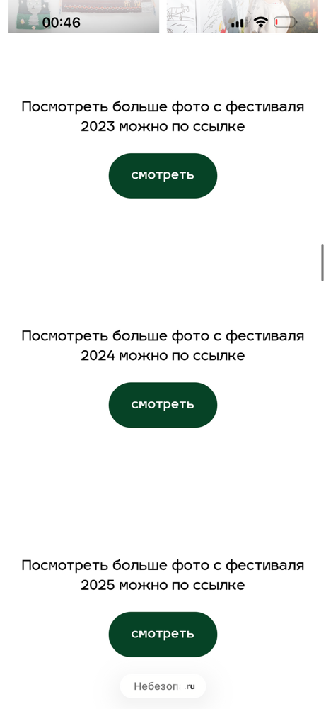
Страница с контактами
Онлайн-присутствие
Проект представлен на следующих площадках:
Добро.ру — анонсы и волонтёрские события: dobro.ru
Публикации охватывают анонсы, репортажи с мест событий и итоговые материалы за 2023–2025 годы.
1.4.Положение о фестивале
IV Межрегиональный фестиваль — 2026
Сроки проведения: 21–23 августа 2026 г.
Место: Свердловская область, г. Сысерть, МБУК «Дворец культуры им. И. П. Романенко», ул. Ленина, 32.
К участию приглашаются: мастера ткачества и прядения из Свердловской, Челябинской, Курганской областей, Пермского края, республик Башкортостан и Удмуртия, а также других регионов России; студенты профильных вузов и ссузов; дизайнеры одежды.
История фестиваля
Год
Статус
Участники (всего)
Мастеров
Студентов
2022
Региональный (пилотный)
—
—
—
2023
I Межрегиональный · ПФКИ
1 000+
57
23
2024
II Межрегиональный · ПФКИ
3 500+
75
29
2025
III Межрегиональный · ПФКИ
4 000+
72
35
2026
IV Межрегиональный · ПФКИ
планируется
—
—
1.5.Отзывы участников (анкета — август 2025)
Анкета гостей фестиваля
Анкета-отзыв собирала данные о впечатлениях гостей после участия в мероприятиях фестиваля. Оценивалось участие в конкретных активностях и их влияние на ценностные установки.
Мероприятия, охваченные анкетой
Мастер-классы по ткачеству и прядению (для взрослых и детей).
Посещение выставок (этнографическая, конкурсные работы, студенческие работы, галерея Галины Клевцовой и др.).
4. Как вы думаете, как можно описать результаты участия гостей в фестивале?
Усилился интерес к традиционным ремёслам и желание научиться чему-то новому
Это вызвало гордость за местные/российские традиции и наше культурное наследие
Это укрепило чувство общности участников, подарило ощущение праздника
Это повысило уважение к мастерству участников и понимание его ценности
Все участники больше узнали об истории и предназначении предметов быта, а также о традиционных текстильных ремёслах
Это усилило желание сохранять традиционные ремёсла и передавать знания следующим поколениям
Ничего из вышеперечисленного / Ваш вариант
5. Оцените по 5-балльной шкале степень влияния на вас мероприятий, которые вы лично посетили
Закрытая шкала: 1 — «не повлияло», 5 — «очень сильно повлияло». Одна оценка на каждое посещённое мероприятие.
Социально-демографический блок анкеты
Пол: мужской / женский
Возраст: до 18 / 18–30 / 31–45 / 46–60 / старше 60 лет
Занятие ремёслами: профессионально / как хобби / интересуюсь / нет
Откуда приехали: местные (Сысерть) / Свердловская обл. / другой регион
Открытый вопрос: Ваши главные впечатления или мысли после фестиваля?
2.Методология оценки
2.1.Объект, цель и предмет оценки
Объект исследования: проект «На зелёной горке холст ткут» и его социокультурное влияние на участников.
Цель оценки: определить вклад проекта в достижение национальных целей России в сфере культуры — в частности, в формирование традиционной ценности «Историческая память и преемственность поколений».
Предмет оценки (по направлениям)
Достижение плановых показателей проекта.
Вклад в укрепление российских духовно-нравственных ценностей.
Изменения в уровне знаний, навыков и отношении участников.
Развитие местного сообщества, экономики, предпринимательства.
Формирование условий для устойчивого развития и масштабирования идей проекта.
2.2.Ключевые оценочные вопросы
Основной вопрос
Насколько проект «На зелёной горке холст ткут» способствовал сохранению и укреплению ценности «Историческая память и преемственность поколений» через возрождение текстильных ремёсел, и какое влияние он оказал на развитие креативной экономики и туризма в Сысерти?
Дополнительные вопросы
Какие изменения произошли у различных целевых групп (дети, студенты, мастера, жители) в контексте понимания, освоения и передачи традиционных ценностей?
В какой степени проект способствовал формированию профессиональных сетей среди мастеров, дизайнеров, педагогов?
Как проект повлиял на туристическую привлекательность Сысерти и Свердловской области?
Появились ли возможности для развития предпринимательских инициатив и малых предприятий?
Какие управленческие и институциональные эффекты вызвала реализация проекта?
2.3.Принципы вовлечения заинтересованных сторон
Группа стейкхолдеров
Роль в оценке
Мастера-участники
Анкетирование, интервью
Гости фестиваля
Анкеты-отзывы
Организаторы и администраторы
Глубинные интервью
Администрация Сысерти
Интервью, данные о стратегическом влиянии
Представители туристической отрасли
Интервью о туристическом потенциале
Образовательные учреждения
Данные о студентах и молодёжи
Фонд поддержки предпринимательства
Данные об экономическом влиянии
3.Инструменты исследования
3.1.Анкета для мастеров-участников
Целевая группа — мастера
Анкета направлена на выявление мотивации участия, изменений в профессиональном отношении и новых возможностей, появившихся благодаря проекту.
Блок 1. Роль в проекте и мотивация
Роль: участник ярмарки/фестиваля, проведение мастер-классов, эксперт/консультант, участник лаборатории.
Мотивация: возможность представить работы; интерес к сохранению традиций; поиск заказов; профессиональное общение; личный интерес к развитию ремёсел.
Блок 2. Изменения и новые возможности
Изменение отношения к традиционным ремёслам после участия.
Новые возможности: профессиональные контакты, заказы, возможность преподавать, доступ к новым материалам.
Планы по развитию деятельности после проекта.
Блок 3. Оценка аспектов проекта (5-балльная шкала)
Организация фестиваля.
Профессиональная ценность участия.
Атмосфера и сообщество.
Практическая польза для ремесленной деятельности.
Вклад в сохранение традиций.
3.2.Гайд глубинного интервью
Респонденты
Руководители и администраторы проекта; сотрудники Администрации Сысерти; представители туристической отрасли; представители Фонда поддержки предпринимательства.
Вопросы об «невидимых» целях и неожиданных эффектах
Как бы вы описали самую главную «невидимую» цель проекта — ту, что не попала в официальные документы?
С какими самыми неожиданными трудностями вы столкнулись? Что стало самым большим открытием?
Как изменилось сообщество мастеров после проекта? Можете привести пример, который вас особенно тронул?
Что из созданного в рамках проекта продолжит жить самостоятельно, без вашего участия?
Вопросы об институциональных и партнёрских эффектах
Как изменились отношения между партнёрами — администрацией, мастерами, образовательными учреждениями?
Как проект повлиял на вас лично — на ваше отношение к ремёслам, к малой родине, к своей миссии?
Если бы вам пришлось передать опыт другим регионам, что бы вы назвали тремя «секретами успеха», которых нет в методичках?
3.3.Бланк контент-анализа публикаций
Медиамониторинг
Анализ публикаций о проекте в СМИ, социальных сетях, интервью. Фиксируются частота упоминаний и акценты в материалах.
Соответствие национальным ценностям (частота упоминания ценностей из Указа № 809).
Упоминание конкретных культурных практик (ткачество, прядение, ремёсла).
4.Результаты исследования
4.1.Онлайн-опрос участников: сводные данные (N = 35)
Ниже представлены оригинальные графики Google Forms из отчёта об онлайн-опросе участников фестиваля. Нажмите на любой график для просмотра в полном размере.
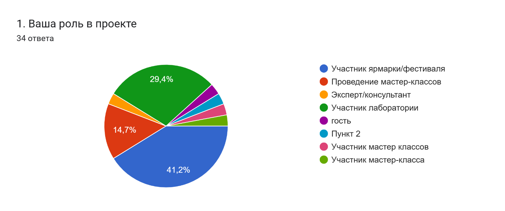
1. Роль в проекте (34 ответа)
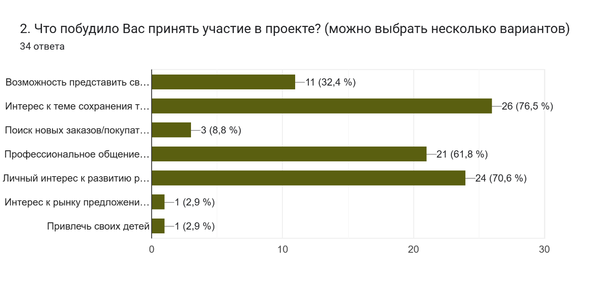
2. Мотивация участия (34 ответа)
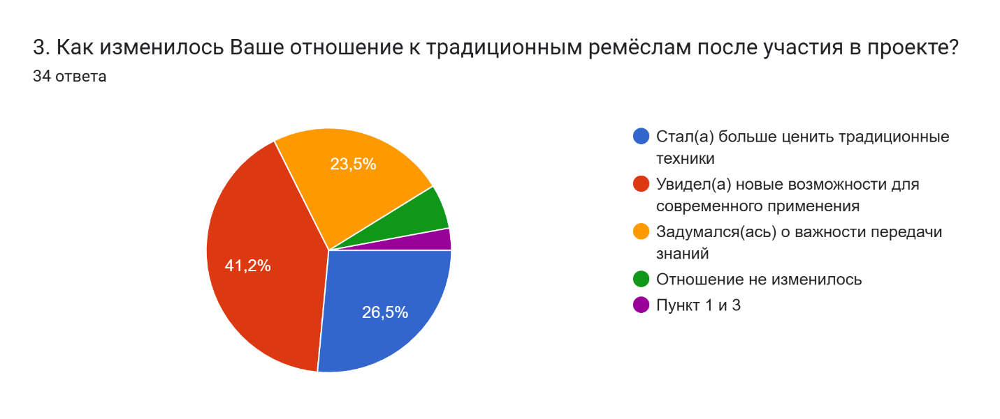
3. Изменение отношения к ремёслам
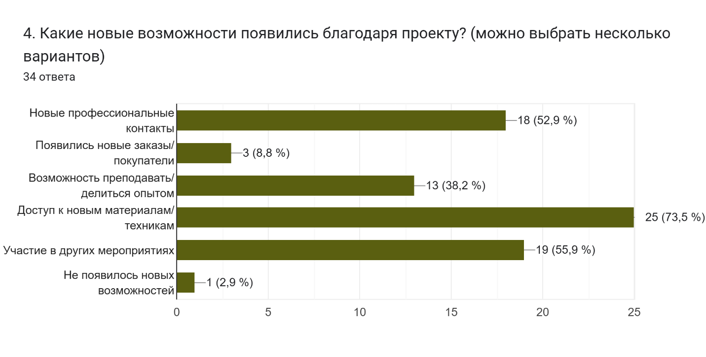
4. Новые возможности после участия
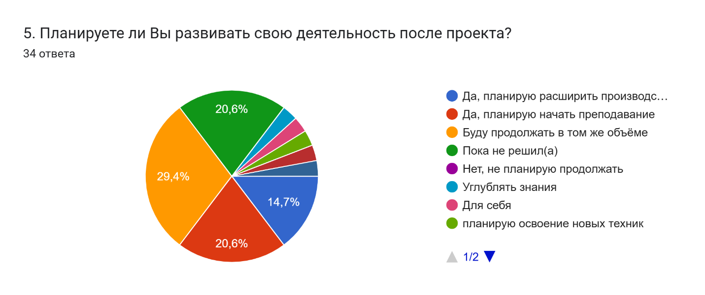
5. Планы по развитию деятельности
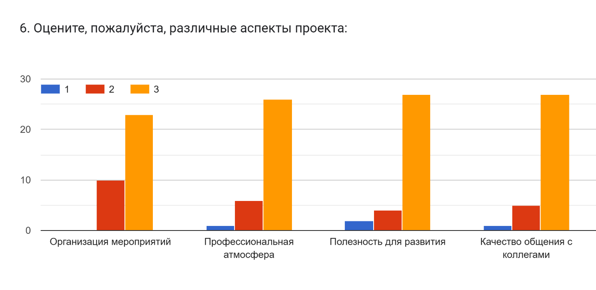
6. Оценка аспектов проекта (шкала 1–5)
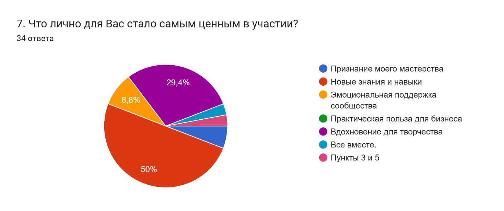
7. Наиболее ценное в участии
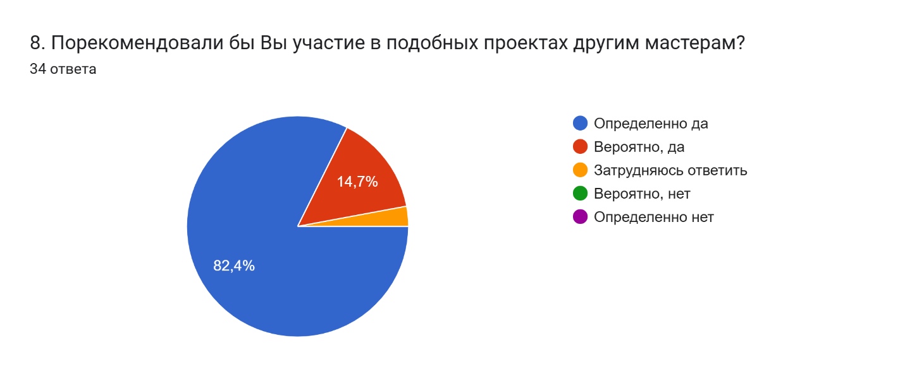
8. Готовность рекомендовать проект
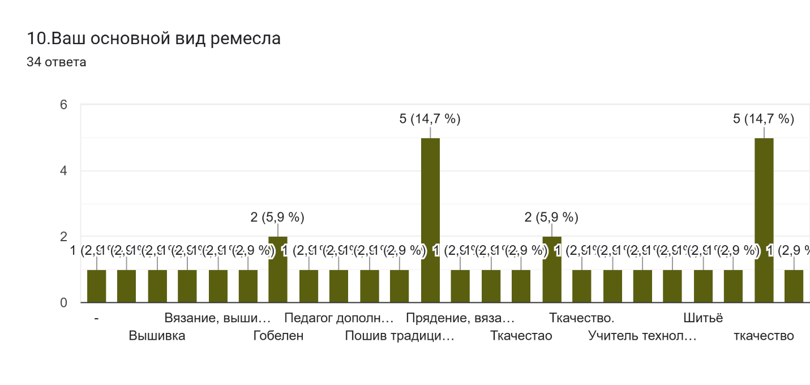
9.1. Демография: пол
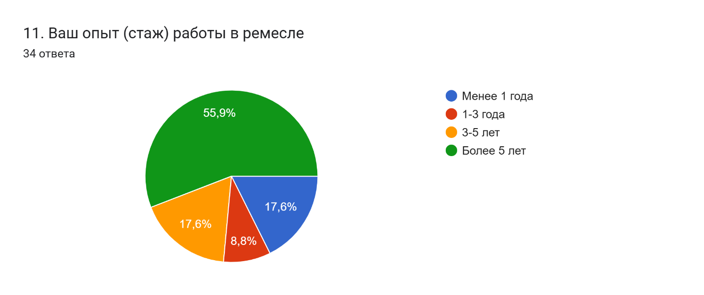
9.2. Демография: возраст
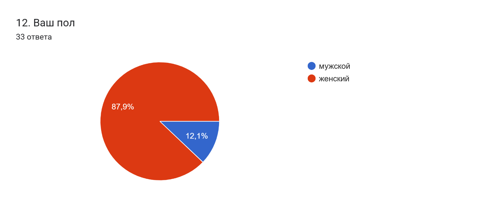
9.3. Место жительства
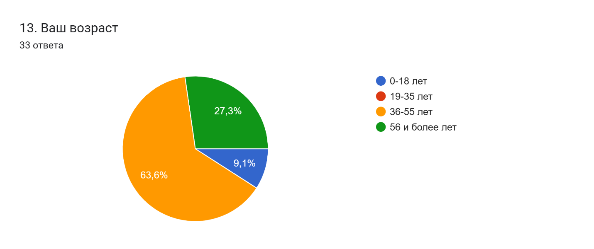
9.4. Опыт работы в ремесле
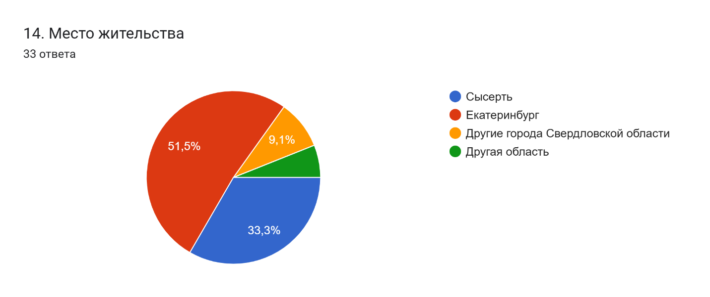
10. Открытые предложения по развитию
Готовность рекомендовать проект (вопрос 8)
Определённо да
~60%
Вероятно, да
~23%
Затрудняюсь / вряд ли
17%
Суммарная доля положительных ответов: 82,9% (29 из 35 респондентов).
Новые возможности после участия (вопрос 4, множественный выбор)
Новые профессиональные контакты
74%
Возможность преподавать / делиться опытом
57%
Участие в других мероприятиях
51%
Появились новые заказы/покупатели
43%
Доступ к новым материалам/техникам
37%
Среднее количество новых возможностей на одного респондента: 2,1.
Планы по развитию деятельности после проекта (вопрос 5)
Буду продолжать в том же объёме
34%
Планирую расширить производство / услуги
29%
Планирую начать преподавание
20%
Пока не решил(а) / другое
17%
В категорию «Другое» вошли ответы о намерении осваивать новые техники и делиться опытом. Возрастная группа 19–35 лет в выборке отсутствует — все respondенты старше 35 лет.
Мотивация участия (вопрос 2, множественный выбор)
Профессиональное общение с коллегами
80%
Интерес к сохранению традиций
74%
Возможность представить свои работы
66%
Личный интерес к развитию ремёсел
60%
Поиск новых заказов/покупателей
34%
Среднее количество выбранных мотивов на одного респондента: 2,5.
4.2.Ключевые выводы
Вывод 1. Фестиваль обладает высоким индексом рекомендации (82,9%), что свидетельствует о сильном позитивном опыте участия и готовности транслировать ценности ремесленного сообщества далее.
Вывод 2. Основная ценность участия для мастеров — профессиональные связи и ощущение сообщества, а не коммерческий эффект. Это характерно для проектов, укрепляющих «созидательный труд» как ценность.
Вывод 3. Возрастная группа 19–35 лет в выборке отсутствует. Это указывает на недостаточное вовлечение молодёжи в ядро профессионального сообщества — при том что гости-молодёжь присутствуют. Необходима отдельная стратегия удержания молодых участников.
Вывод 4. Динамика роста фестиваля (×4 за три года) отражает устойчивый общественный запрос и свидетельствует о масштабировании социокультурного эффекта.
4.3.Рекомендации
Ввести специальную программу вовлечения молодых мастеров 19–35 лет — менторство, стипендии, отдельные конкурсные номинации.
Создать реестр мастеров — носителей текстильных традиций Свердловской области.
Отслеживать долгосрочные эффекты: через 6 месяцев после фестиваля — появление новых предпринимательских инициатив и самоорганизованных сообществ.
Усилить туристическую составляющую: включить фестиваль в маршруты Russpass, региональные туристические порталы.
Зафиксировать фестиваль как «место памяти» в рамках регионального культурного реестра.
4.4.Студенческий анализ видеоматериала о фестивале
Студенты, ознакомившиеся с видеоматериалами проекта «На зелёной горке холст ткут», провели самостоятельный анализ того, как фестиваль влияет на сохранение исторической памяти и традиционных ценностей. Ниже — фрагменты их работ.
«Историческая память удивительным образом сохраняется благодаря таким проектам, как эта онлайн-экскурсия. Погружаясь в такое пространство, невольно ощущаешь живую связь с прошлым. Музеи, подобные тем, что представлены в проектах, совершают маленькое чудо — они дарят нам возможность, не покидая родного дома, прикоснуться к истории своего края, узнать его тайны и сокровища.»
Евсюкова Виктория · Анализ видеоматериала фестиваля
«Историческая память и преемственность поколений тесно связаны. Первая сохраняет уроки и дух прошлого, вторая передаёт их от предков к потомкам, формируя национальное самосознание. Видеоэкскурсии благотворно влияют на оба явления. Одновременно такие видео легко объединяют семью у экрана: старшие делятся воспоминаниями, молодые задают вопросы. Так цифровой формат укрепляет связь поколений, помогая нити времён оставаться прочной даже в современном мире.»
Тимофеева Екатерина · «Память и преемственность через цифровой формат»
«Передавая факты и события без искажений, мы оберегаем правду прошлого и создаём прочную основу для будущего. Историческая память служит своеобразным мостом между минувшими эпохами и современностью. Ярким примером такой работы являются масштабные проекты, направленные на сохранение и развитие историко-культурного пространства. Они объединяют прошлое и настоящее в единую живую нить памяти.»
Крылышкина Анастасия · «Сохранение подлинности исторической памяти»
Главные тезисы студенческого анализа
Видеоформат позволяет широкой аудитории прикоснуться к наследию без физического посещения.
Проект создаёт «диалог с прошлым» — аудиовизуальный контент оживляет историческую информацию.
Фестиваль укрепляет межпоколенческие связи, объединяя разные возрастные группы вокруг общего культурного опыта.
Ремёсла рассматриваются как носители «духовного кода» территории — не просто умения, а ценности.
5.Мнение экспертов
Глубинные интервью с организаторами и участниками проекта. Приведены полные ответы экспертов в авторской редакции.
5.1.Эксперт 1 — Анкета организатора проекта
Респондент
Руководитель / администратор проекта, сотрудник Администрации Сысерти, представитель туристической отрасли Сысерти, непосредственно участвовавший в организации и проведении фестиваля.
1. Как бы вы описали самую главную, «невидимую» цель проекта — ту, что не попала в официальные документы, но была важна лично для вас?
Дружеское общение; возможность увидеть того, с кем давно не виделся и не общался.
2. С какими самыми неожиданными трудностями вы столкнулись при реализации проекта? Что стало самым большим открытием?
Лично для меня трудность была в том, чтобы чётко систематизировать информацию от участников. Не все заполняют данные по установленной форме, предоставляют неполные данные. Самым большим открытием стало то, что единственная причина заниматься всем этим — это удовольствие.
3. Как изменилось сообщество мастеров и участников после проекта? Можете привести пример, который вас особенно тронул или удивил?
Я не могу говорить за всех. Но я знаю, что одна участница решила, что ей пора расти дальше, искать новые формы. Меня трогает, что дети и студенты искренне принимают участие в фестивале, что им это нравится, они хотят поднимать уровень мастерства.
4. Что, на ваш взгляд, стало самым сильным эмоциональным моментом для участников — и почему именно это?
Не знаю. Может быть, момент награждения. Потому что диплом является символом признания твоего труда и мастерства.
5. Если бы у вас были неограниченные ресурсы, что бы вы изменили или добавили в проект?
Честно, не знаю.
6. Как проект повлиял на вас лично — на ваше отношение к ремёслам, к малой родине, к своей миссии?
Я увидела, что ремесло — это хорошее, доброе дело. К малой родине отношение не изменилось — я с уважением отношусь к малой родине. Свою миссию вижу в просвещении.
7. Кто или какие группы оказали наибольшее неожиданное влияние на проект — возможно, те, о ком изначально не думали?
Этого я тоже не знаю.
8. Что из созданного в рамках проекта продолжит жить самостоятельно, без вашего участия?
Да буквально всё. Если я выйду из игры, то ничего не изменится, всё будет идти также своим чередом.
9. Как изменились отношения между партнёрами — администрацией, мастерами, образовательными учреждениями — после совместной работы?
Мастера, как мне кажется, стали больше общаться между собой. Это самое ценное и важное — социальные связи.
10. Если бы вам пришлось передать опыт этого проекта другим регионам, что бы вы назвали тремя самыми важными «секретами успеха», которых нет в методичках?
Найти человека (желательно больше одного), который искренне верит в свою миссию, который готов превозмогать трудности.
Найти ещё одного человека (можно из пункта 1, а можно и любого другого), который умеет организовывать людей и ресурсы.
Просить помощи и поддержки у мастеров. Совместный труд объединяет.
5.2.Эксперт 2 — Глубинное интервью
1. Как бы вы описали самую главную, «невидимую» цель проекта — ту, что не попала в официальные документы, но была важна лично для вас?
Самая главная невидимая цель — это «починка» ткани времени между поколениями. Мы часто говорим о сохранении ремесла, но лично для меня было важно, чтобы бабушка, которая помнит, как её бабушка ткала половики, и внук, который видит мир через экран, сели за один станок и услышали дыхание друг друга. В документах это называется «преемственность», а по сути — это чудо, когда ребёнок на лаборатории «Ткем сказку» вдруг понимает, что нитью можно не просто вязать, а рассказывать историю. Проект должен был вернуть чувство, что мы не потребители, а сотканы из чего-то общего.
2. С какими самыми неожиданными трудностями вы столкнулись при реализации проекта? Что стало самым большим открытием?
Самая неожиданная трудность — это... неумение людей ждать. В эпоху клипового мышления участники фестиваля и мастер-классов «Текстильный калейдоскоп» впадали в панику через 10 минут работы за станком. «Почему так медленно? Где результат?» Нам пришлось экстренно учить их медитации под стук челнока.
А открытием стало то, что мужчины хотят ткать. Мы думали, что это женская история, но на III Межрегиональный фестиваль пришли отцы с детьми. Они говорили: «Это как собирать лего, только руками». И они создавали потрясающие геометрические панно. Это разрушило мои собственные стереотипы.
3. Как изменилось сообщество мастеров и участников после проекта? Можете привести пример, который вас особенно тронул или удивил?
Сообщество перестало быть «одиночками-ремесленниками». Появилось плечо.
Особенно тронуло, что на лабораторию «Ткем вместе» стали приходить взрослые женщины, которые раньше никогда не умели ни прясть, ни ткать. У них было огромное желание научиться новому — но самое удивительное не это. Они приносили старые, выцветшие, дырявые изделия своих бабушек или свои собственные, которые жалко было выбросить. И мы вместе с ними придумывали, как починить эту ткань, вплести свежие нити, перекроить. В итоге старый половик становился вставкой на сумке, а застиранная скатерть — частью платья. Для меня это и есть реальное изменение: когда ремесло перестаёт быть «музейным экспонатом» и начинает лечить не только вещи, но и отношение женщин к своему прошлому. Они говорили: «Я думала, старая ткань — мусор, а теперь это моя гордость». Вот это чудо — подарить старой ткани новую жизнь, а женщине — веру в свои руки.
4. Что, на ваш взгляд, стало самым сильным эмоциональным моментом для участников — и почему именно это?
Момент, когда на фестивале на станке соткали 5 метров. Мы предложили всем желающим сделать по 5–10 прокидок челноком. В роли ткачей себя пробовали и взрослые, и дети, и влиятельные люди, и туристы. К вечеру получилось огромное неровное, живое, кое-где корявое полотно. Когда его подняли, все увидели: в нём был телесный след каждого — кто-то торопился, кто-то задумался, кто-то впервые держал челнок.
Почему это сильно? Потому что обычно в культуре мы потребляем идеальный продукт. А тут люди увидели: красота рождается из совместных усилий, из права на ошибку, из того, что каждый вложил частицу себя. Это был коллективный выдох. Резать его никто и не собирался — так и повесили в фойе, и назвали «дорожка дружбы». До сих пор гости фестиваля ищут на ней свой след.
5. Если бы у вас были неограниченные ресурсы, что бы вы изменили или добавили в проект?
О, я бы купила здание по типу фабрики-цеха в Сысерти и превратила его в живой музей тактильного ткачества. Не «не трогать руками», а «залезай и тки».
Я бы добавила:
Звуковую инсталляцию — шум ткацких станков, смешанный с уральскими диалектами.
Ткацкую резиденцию для художников со всей России на 1–2 месяца.
Автобус-ткацкую — чтобы ездить по отдалённым деревням и обучать техникам ткачества и прядения.
И ещё — создать фонд, чтобы мастера могли просто быть в пространстве и обмениваться опытом, не думая о почасовой оплате.
6. Как проект повлиял на вас лично — на ваше отношение к ремёслам, к малой родине, к своей миссии?
Я занимаюсь исследованием текстильных ремёсел Свердловской области, и для меня этот проект стал апробацией моей научной работы на живых людях, а не только в архивах. Раньше я смотрела на ремесло как на объект изучения: техники, орнаменты, узелки. А в проекте я увидела лица, руки, истории. К малой родине — Сысерти — я теперь отношусь не как к точке на карте Бажова, а как к уникальному текстильному коду. И моя миссия теперь ясна: не просто сохранять ремёсла, а вписывать их в большую научную и культурную картину, доказывая, что ткачество — это такой же важный язык, как письменность.
7. Кто или какие группы оказали наибольшее неожиданное влияние на проект — возможно, те, о ком изначально не думали?
Честно говоря, мы изначально думали, что главные герои — мастера и участники. А самое большое и неожиданное влияние оказали волонтёры. Обычные ребята, которые пришли помогать на фестиваль. Они не обязаны были ничего знать о ткачестве, но именно они стали живым навигатором проекта.
Они заполняли анкеты с людьми — и через эти разговоры мы узнали реальные отзывы, боль, радость, которые участники стеснялись говорить мастерам вслух. Волонтёры объясняли на площадках, где что происходит, куда идти за челноками, где перекусить, где посмотреть выставку. Они снимали напряжение, создавали уют. Без них фестиваль рассыпался бы на кучу потерянных людей.
И самое удивительное: после проекта несколько волонтёров сами записались на курсы ткачества. Одна девушка сказала: «Я столько дней водила людей к станку, что в конце концов захотела сесть за него сама». Вот это влияние — когда помощники становятся продолжателями дела.
8. Что из созданного в рамках проекта продолжит жить самостоятельно, без вашего участия?
Самое главное, что осталось после проекта — это люди, которые научились ткать и прясть. Причём не просто разово попробовали на мастер-классе, а втянулись, заболели, купили себе простые станки или веретёна. Я знаю уже несколько женщин из Сысерти, Екатеринбурга и Кашино, которые после лаборатории «Ткем вместе» организовали у себя дома мини-мастерские. Они ткут половики, пояса, маленькие панно — сначала для себя, потом на заказ.
Эти люди не ждут новых грантов и фестивалей. Они просто работают руками, продают изделия на местных ярмарках, учат соседей. У них образовался свой чатик — без меня. Они сами делятся схемами, нитками, советами. Вот это и есть настоящая жизнь проекта: когда ремесло перестаёт быть событием и становится будничным делом. Без нас. Без кураторов. Просто нить и руки.
9. Как изменились отношения между партнёрами — администрацией, мастерами, образовательными учреждениями — после совместной работы?
Отношения стали гораздо живее и человечнее. Образовательные учреждения теперь не просто соглашаются, а сами записываются с детьми на наши мастер-классы из серии «Текстильный калейдоскоп». Учителя говорят, что это лучшая профориентация: дети видят, что можно создавать красоту руками, а не только в телефоне.
Мастера очень ждут следующий фестиваль. Они готовятся заранее, придумывают новые техники, спорят, кто кого удивит. У них появился азарт и чувство, что их искусство нужно не только им самим.
Администрация стала относиться к фестивалю как к ежегодной традиции, а не разовому мероприятию. Упростили согласования, потому что увидели, что скандалов нет, а туристы едут. При этом по-прежнему смотрят в основном на цифры — сколько человек пришло, — но теперь хотя бы не спрашивают «а зачем это всё?». Появилось понимание, что ткачество — это про идентичность города.
Но самое главное — мы перестали быть чужими друг для друга. Раньше каждый делал своё, а теперь хотя бы здороваются и знают по именам.
10. Если бы вам пришлось передать опыт этого проекта другим регионам, что бы вы назвали тремя самыми важными «секретами успеха», которых нет в методичках?
В методичках обычно пишут про логистику, отчётность, количество мероприятий. А наши три секрета — про другое.
Секрет №1: «Не гонись за количеством, гонись за глубиной». У нас были и лаборатории «Ткем вместе» на 10–20 человек, где мы работали медленно и вдумчиво, и серия мастер-классов «Текстильный калейдоскоп», которую посетило порядка 240–300 человек. Секрет не в том, чтобы выбрать что-то одно. Секрет в том, чтобы дать каждому свой формат. Тому, кто хочет попробовать и уйти, — быстрый мастер-класс. Тому, кто готов разозлиться на непослушную нить и просидеть три часа, — маленькая лаборатория. Главное — не охват ради охвата, а чтобы в каждом формате человек почувствовал: его время здесь потратили не зря.
Секрет №2: «Позволь людям чинить, а не только создавать». Оказалось, что взрослым участницам важнее всего было принести старую поношенную кофту и превратить её в новую сумку или платье. Ремесло становится живым в моменте починки, перепридумывания. Это про экологию, про память, про «я уменьшаю количество мусора». Обязательно включайте в проект мастерские по реставрации и апсайклингу.
Секрет №3: «Доверяй тем, кто не умеет». Самые сильные результаты дали не мастера с огромным стажем, а новички — дети, волонтёры, женщины, которые впервые взяли в руки челнок. Их восторг, их ошибки, их «смотрите, у меня получилось!» заряжают пространство. Мы перестали бояться, что полотно будет кривым. Именно оно, кривое и живое, стало «дорожкой дружбы» и главным символом проекта. Не бойтесь несовершенства — бойтесь стерильности.